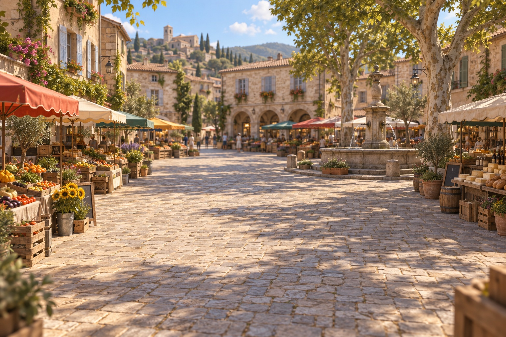

Place du marché · L'entretien
Micro-trottoir
Trois personnes, trois questions possibles à chaque fois. Pose-les et regarde ce que chacune te rapporte.
CamilleObserver, ça ne suffit pas : il faut aussi écouter les gens. Choisis quelqu'un et lance-toi, je te souffle un conseil après chaque question.